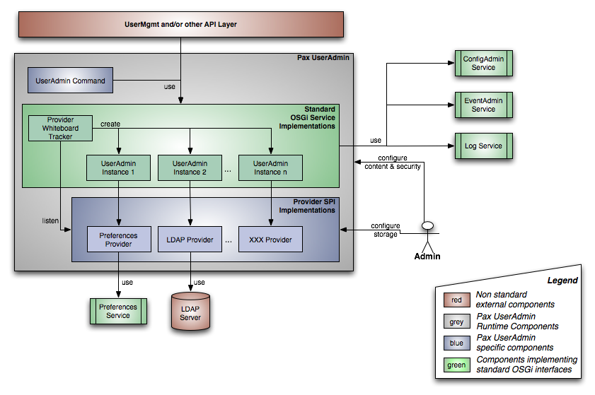

The Pax UserAdmin project aims to leverage the standard OSGi UserAdmin specification as specified in chapter 107 of the latest OSGi Service Platform Release 4 Compendium Specification Version 4.2.
Main goal is to provide 'enterprise value' - all the tools and handles needed to manage large amounts of user data, often having to deal with one or even more legacy systems.
This includes features like:
The current effort is very straightforward - any feedback, test-experiences or 'value adding' feature requests to make the implementation more sophisticated are welcomed on the mailing list.
The Pax UserAdmin architecture is based on the Extender Pattern: a ServiceTracker tracks all services that implement the StorageProvider SPI and manages OSGi UserAdmin service instances for each provider it detects.
The Pax UserAdmin service implementation provides all the necessary glue code to enable independent development of storage providers and service consumers.
The decoupling of the OSGi service management code from the actual storage access offers advantages for developers as well as deployers and system maintainers: developers can concentrate on the actual storage access code while deployers may easily combine arbitrary StorageProvider services.
Although simple, this architecture allows complex configurations, e.g. having multiple UserAdmin services in one framework to transfer data from one to the other.
StorageProvider Types
Services implementing the StorageProvider interface must define a provider-type service property which must be globally unique in the system. This property is also set to the UserAdmin service for that provider, so standard OSGi filter mechanism can be used to locate services.
Standard types delivered together with the project are:
| - LDAP | access to LDAP stores via the ldap:// protocol |
| - Preferences | access to data stored via the OSGi Preferences service |
More provider types may be defined by 3rd party implementations.
Useradmin URI Protocol
To identify UserAdmin instances a new URI protocol useradmin://<provider-type is introduced. A useradmin URI consists of the protocol prefix and a provider-type, i.e. useradmin://Ldap
The Pax UserAdmin project is distributed as a set of OSGi bundles available in the OPS4J snapshot repository: